오늘의 흐름
새로 나온 기능을 “구경”하는 시간이 아니라, 내일 연구실에서 바로 다시 해 볼 수 있게 손으로 한 번씩 해 보는 시간입니다. 모든 실습은 단계별로 따라오시면 됩니다.
모든 자료는 연수용으로 만든 가상 자료입니다. 실제 기관·교과목·학생과 관계없습니다. 각 단원에서 하나씩 받으셔도 됩니다.
- 각 실습 끝의 “여기까지 하셨으면 충분합니다”까지 오셨으면 다음으로 넘어가셔도 됩니다.
- 메뉴가 안 보이면 각 실습 아래 “안 보이면” 상자를 보세요. 계정 종류에 따라 화면이 다를 수 있습니다.
- 손을 들지 않으셔도 됩니다. 화면을 그대로 두시면 강사가 자리로 가서 도와드립니다.
- 학생 실명·학번·성적 실데이터는 넣지 않습니다. 오늘은 가상 데이터만 씁니다.
- 미공개 연구자료·심사 중인 원고는 개인 AI 계정에 올리지 않습니다.
- AI 답변은 초안입니다. 최종 판단과 책임은 교수님께 있습니다.
120분 타임테이블
0 시작 15분
오늘 기능 대부분은 크롬에 구글 계정으로 로그인되어 있어야 나타납니다. 웹사이트 로그인과 크롬 로그인은 다릅니다.
필수① 크롬 로그인 점검 (4분)
- 크롬 오른쪽 위 점 세 개(⋮) → 도움말 → Chrome 정보에서 최신 버전인지 확인합니다. 업데이트가 있으면 다시 시작을 누릅니다.
- 오른쪽 위 프로필 아이콘을 눌러 내 구글 계정으로 크롬에 로그인되어 있는지 확인합니다. 공용 PC라면 Chrome 프로필 추가로 내 프로필을 새로 만듭니다.
- gemini.google.com에 접속해 대화창이 열리는지 확인합니다.
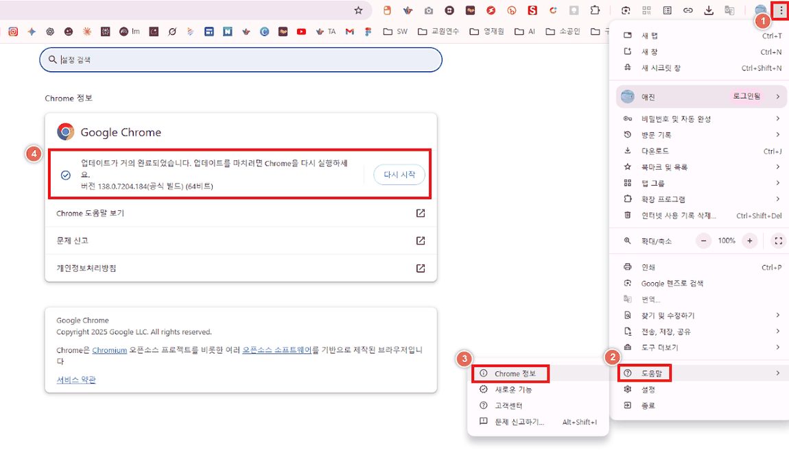
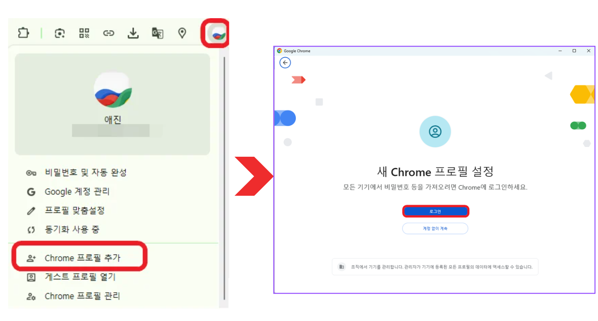
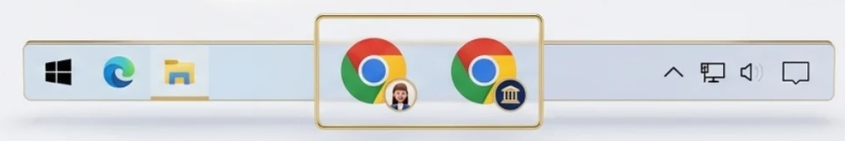
여기까지 하셨으면 충분합니다.
필수② 오늘 쓰는 제미나이는 네 군데에 있습니다 (3분)
| 어디서 | 무엇을 | 오늘 단원 |
|---|---|---|
| 크롬 안 (제미나이 인 크롬) | 보고 있는 웹페이지·PDF·여러 탭에 바로 질문 | 1 · 2 |
| 제미나이 앱 (gemini.google.com) | 대화, 스킬, @로 지메일·드라이브·킵 불러오기 | 2 · 4 |
| 구글 워크스페이스 안 (폼·시트·문서·지메일) | 각 화면의 ✦ 버튼으로 그 자리에서 도움받기 | 3 · 4 |
| 휴대폰 (제미나이 앱·구글 렌즈) | 카메라로 보여 주며 묻기, 말로 대화하기 | 5 |
실습③ 크롬 기본기 — 알면 하루 10분 아끼는 것들 (8분)
제미나이보다 먼저, 매일 쓰는 크롬을 편하게 만드는 네 가지입니다. 아래 해 보기 3개만 따라 하시면 됩니다.
⑴ 북마크바 — 자주 가는 곳은 한 번에
- Ctrl+Shift+B로 주소창 아래 북마크바를 켭니다.
- 지금 페이지를 저장할 땐 Ctrl+D → 폴더를 “강의 · 연구 · 학사”처럼 나눠 둡니다.
- 이름을 지우고 저장하면 아이콘만 남아 북마크바에 더 많이 들어갑니다.
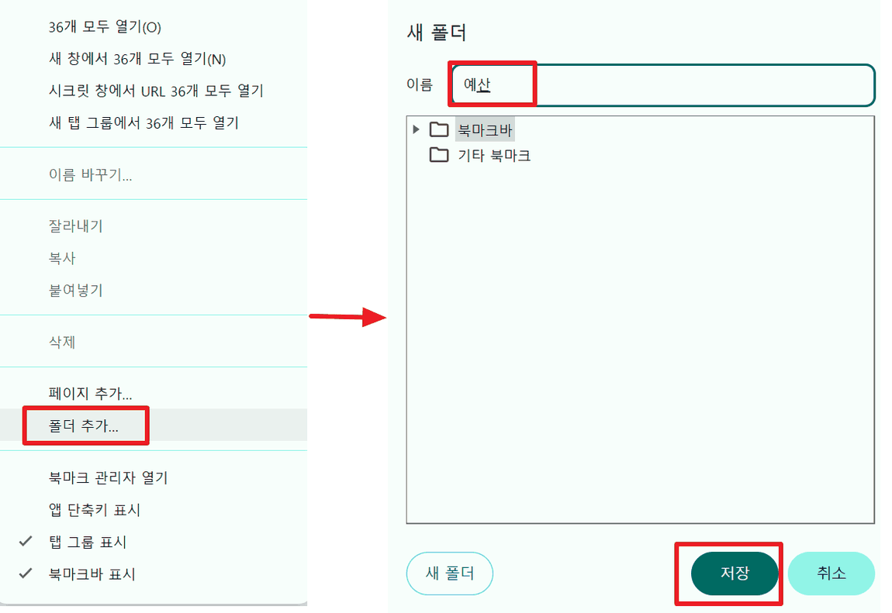
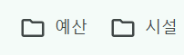
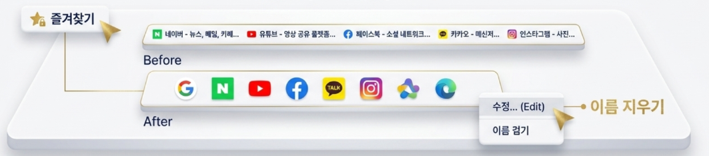
⑵ 이것만 외우세요 — 단축키 8개
| 누르면 | 이렇게 됩니다 | 누르면 | 이렇게 됩니다 |
|---|---|---|---|
| Ctrl+T | 새 탭 | Ctrl+Shift+T | 실수로 닫은 탭 다시 열기 |
| Ctrl+F | 페이지·PDF 안에서 글자 찾기 | Ctrl+L | 주소창으로 바로 이동 |
| Ctrl++ / - / 0 | 글자 크게 / 작게 / 원래대로 | Ctrl+P | 인쇄 → 대상 PDF로 저장 |
| Win+Shift+S | 화면 일부 캡처 → Ctrl+V로 붙여넣기 | Ctrl+Shift+N | 시크릿 창 |
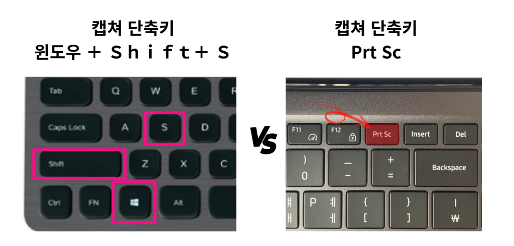
⑶ 시크릿 창과 게스트 창은 다릅니다
| 구분 | 시크릿 창 | 게스트 창 |
|---|---|---|
| 무엇인가 | 내 프로필에서 기록만 남기지 않는 창 | 아무것도 없는 빈 프로필 |
| 언제 쓰나 | 내 PC에서 다른 계정으로 잠깐 로그인할 때 | 공용 PC에서 남의 북마크·계정을 보지 않고 쓸 때 |
| 주의 | 둘 다 창을 닫으면 로그인과 기록이 사라집니다. 제미나이 인 크롬은 시크릿 창에서 작동하지 않습니다. | |
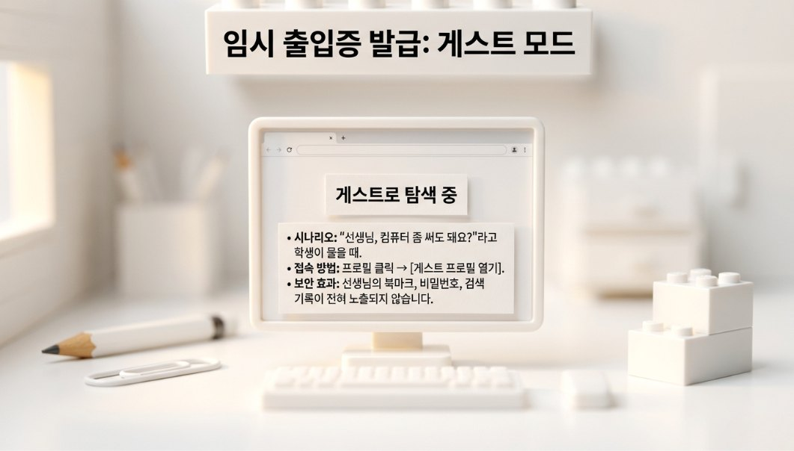
- 지금 보고 계신 이 교안을 Ctrl+D로 “대진대 연수” 폴더에 저장합니다.
- 아무 탭이나 하나 닫고, Ctrl+Shift+T로 다시 엽니다.
- Win+Shift+S로 이 표를 캡처해 메모장이나 카톡 PC 대화창에 붙여넣어 봅니다.
여기까지 하셨으면 충분합니다.
1 제미나이 인 크롬 20분
탭을 옮기지 않고, 지금 보고 있는 페이지 옆에서 제미나이에게 묻습니다. 논문 PDF, 공문, 강의계획서, 유튜브 영상까지 “보면서 묻는” 방식입니다.
실습① 제미나이 패널 열기 + 페이지 요약 (5분)
- 실습용 공지 페이지 [가상] AI 활용 수업혁신 사례 공모 안내를 새 탭으로 엽니다. (아무 기사나 학과 공지 페이지로 하셔도 됩니다)
- 크롬 오른쪽 위의 ✦ Gemini 버튼을 누릅니다. 오른쪽에 패널이 열립니다.
- 아래 프롬프트를 붙여넣습니다.
이 페이지 내용을 교수 회의에서 30초 안에 보고할 수 있게 세 줄로 요약해줘. 날짜·숫자·기한은 빠뜨리지 말고, 페이지에 없는 내용은 덧붙이지 마.
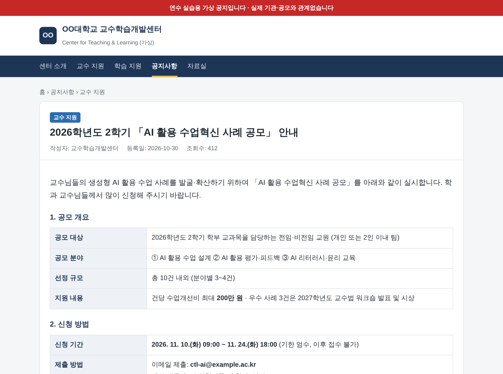
- 크롬에 로그인되어 있는지(0단원) 확인합니다. 시크릿 창에서는 작동하지 않습니다.
- 크롬을 최신으로 업데이트한 뒤 다시 시작합니다.
- 설정 → AI 혁신(또는 Gemini) 메뉴에서 켜져 있는지 확인합니다. 메뉴 이름은 업데이트로 바뀔 수 있습니다.
- 그래도 없으면 gemini.google.com에 페이지 주소나 내용을 붙여넣어 같은 질문을 하셔도 됩니다.
실습② PDF에 질문하기 — 강의계획서·논문 (7분)
PDF 파일을 크롬 창에 끌어다 놓으면 크롬에서 열립니다. 그 상태로 제미나이 패널에 질문합니다.
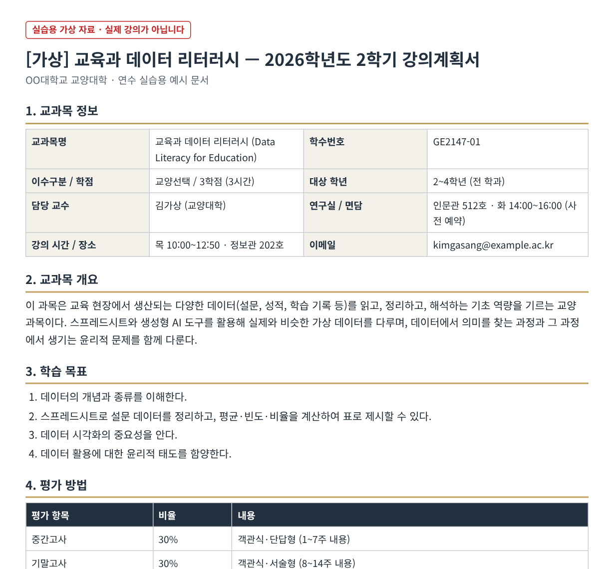
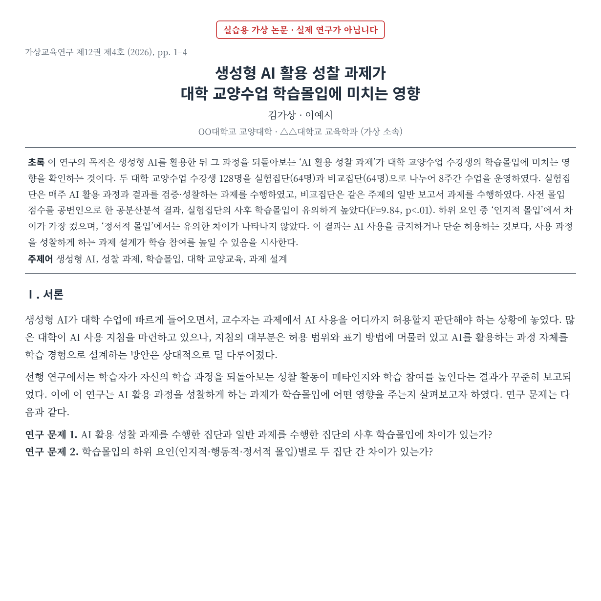
- 내 강의계획서 PDF 또는 내 분야 논문 PDF 하나를 크롬 창에 끌어다 놓습니다. (한글 파일은 한글에서 다른 이름으로 저장 → PDF)
- 제미나이 패널에서 아래 카드 중 하나를 고릅니다.
이 강의계획서를 점검해줘. 1) 학습목표가 관찰·측정할 수 있는 동사로 쓰였는지 2) 학습목표와 평가 방법이 서로 연결되는지 3) 생성형 AI 사용 기준이 학생에게 분명하게 안내되어 있는지 항목별로 '잘된 점 / 고칠 점 / 고친 예시 문장'을 표로 보여줘. 문서에 없는 내용은 추측하지 말고 '문서에 없음'이라고 적어줘.
이 논문의 연구 질문, 연구 방법(대상·도구·분석), 핵심 결과, 한계를 표로 정리해줘. 각 항목 옆에 근거가 되는 쪽수나 문장을 짧게 인용해줘.
여기까지 하셨으면 충분합니다.
실습③ 여러 문서 대조하기 — 탭 두 개 비교 (8분)
제미나이 인 크롬은 열어 둔 여러 탭을 함께 보고 비교할 수 있습니다. 작년과 올해 강의계획서, 두 기관의 공고문, 두 논문의 방법 비교에 쓰입니다.
- 아래 두 실습 자료를 각각 새 탭으로 엽니다. (가상 강의계획서입니다)
- 제미나이 패널의 입력창 옆 ＋(탭 추가)를 눌러 두 탭을 모두 선택합니다.
- 아래 프롬프트를 보냅니다.
선택한 두 강의계획서를 비교해서 바뀐 점을 표로 정리해줘. 열은 '항목 / 2025-2 / 2026-2 / 무엇이 달라졌나'로 해줘. 마지막에 학생에게 안내해야 할 변경 사항 3가지를 한 문장씩 써줘.
- 정부·재단 공모 공고 두세 개를 열어 “지원 자격·마감·예산 한도”를 한 표로
- 같은 주제 논문 세 편을 열어 “연구 대상과 방법” 비교표로
- 학과 규정 개정 전후 문서를 열어 “바뀐 조항만” 뽑기
여기까지 하셨으면 충분합니다.
강사 시연보너스④ 유튜브 강연 정리 · 지메일 초안 · 캘린더 등록 (시간이 되면)
유튜브 영상을 연 채로 패널에 질문하면 영상 내용을 정리해 줍니다. 페이지를 벗어나지 않고 지메일 초안을 쓰거나 일정을 캘린더에 넣는 것도 됩니다.
이 영상의 핵심 주장 3가지를 시간대와 함께 정리하고, 내 수업 '[과목명]'에서 토론 질문으로 쓸 만한 질문 2개를 만들어줘.
이 페이지에 나온 행사 일시와 장소로 내 구글 캘린더에 일정을 추가해줘. 추가하기 전에 날짜와 시간을 나에게 먼저 확인받아줘.
2 제미나이 스킬 18분
매번 길게 쓰던 지시문을 한 번 저장해 두고, /(슬래시)만 눌러 다시 부르는 기능입니다. 지난 연수에서 만드신 젬(Gems)도 이 스킬로 바뀌고 있습니다.
필수① 젬스에서 스킬로 — 무엇이 바뀌나 (3분)
- 구글은 2026년 11월 17일부터 젬(Gems)을 스킬로 자동 전환한다고 안내하고 있습니다. 전환 전까지는 젬을 그대로 쓸 수 있습니다.
- 젬은 왼쪽 목록에서 찾아 들어가야 했지만, 스킬은 대화창에서 /만 입력하면 바로 부를 수 있습니다. 여러 스킬을 함께 쓸 수도 있습니다.
- 크롬 안의 제미나이에도 스킬이 있어, 보고 있는 페이지에 저장한 지시를 그대로 적용할 수 있습니다.
실습② 크롬에서 스킬 만들고 부르기 (5분)
- 1단원에서 쓴 프롬프트 중 마음에 들었던 것을 제미나이 패널에서 한 번 더 실행합니다.
- 패널의 대화 기록에서 그 프롬프트를 고르고 스킬로 저장을 누릅니다. 이름(예: 회의보고 3줄)과 이모지를 정합니다.
- 다른 페이지로 가서 패널 입력창에 /를 입력하고, 방금 만든 스킬을 고릅니다.
- 구글이 미리 만들어 둔 스킬도 둘러봅니다. 주소창에 chrome://skills/browse를 입력합니다.
아래는 교수님들이 저장해 두면 좋은 스킬 예시입니다.
스킬 1은 1단원의 가상 공지 페이지에서 바로 시험해 볼 수 있습니다.
이 페이지(문서)에서 ① 해야 할 일 ② 기한 ③ 제출처 ④ 첨부해야 할 것만 표로 뽑아줘. 문서에 없는 항목은 '없음'으로 적어줘.
이 논문(페이지)을 '연구 질문 / 방법 / 결과 / 내 연구에 쓸 점' 네 줄 카드로 정리해줘. 근거 문장을 하나씩 짧게 인용해줘.
이 페이지 내용을 대학 [학년] 수업용으로 바꿔줘. ① 핵심 개념 3개와 쉬운 설명 ② 확인 퀴즈 3문항(정답 포함) ③ 토론 질문 1개.
여기까지 하셨으면 충분합니다.
실습지난 연수 이어서③ 루브릭 채점 젬을 스킬로 — 파일 넣은 스킬 만들기 (10분)
지난 연수에서 만든 루브릭 근거 채점 젬을 이번엔 스킬로 만들어 봅니다. 스킬에도 PDF·텍스트·이미지 파일을 넣을 수 있어(스킬 하나당 100MB), 루브릭을 기준 자료로 붙여 둘 수 있습니다.
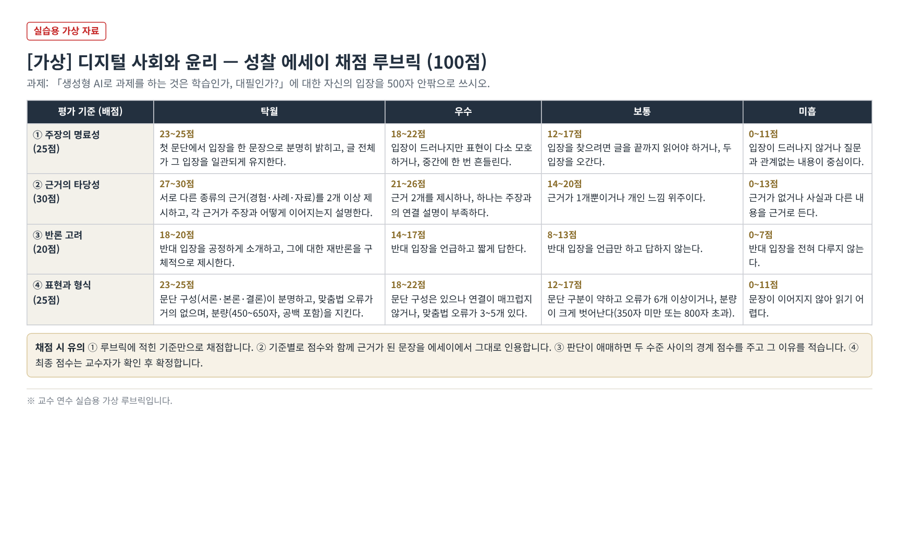
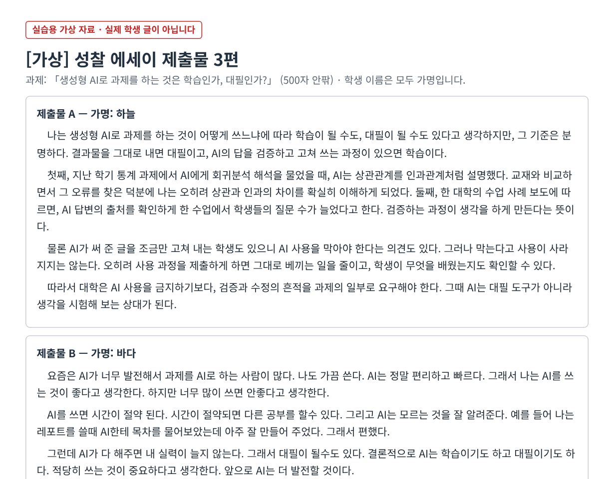
- gemini.google.com에서 스킬 메뉴 → 새 스킬 만들기를 누릅니다. [확인 필요: 연수일 기준 메뉴 위치·이름]
- 이름을 성찰 에세이 채점 도우미로 하고, 아래 지시문을 붙여넣습니다.
- 파일 추가에서 채점 루브릭 PDF를 넣고 저장합니다.
- 새 대화에서 /를 눌러 스킬을 고르고, 학생 에세이 3편 PDF를 첨부해 아래 요청을 보냅니다.
너는 대학 교양수업의 채점 보조자야. 첨부한 '성찰 에세이 채점 루브릭'만 기준으로 채점해. 1. 제출물마다 4개 기준(주장의 명료성 25 / 근거의 타당성 30 / 반론 고려 20 / 표현과 형식 25)별 점수와 수준(탁월·우수·보통·미흡)을 표로 보여줘. 2. 각 점수 옆에 근거가 된 문장을 제출물에서 그대로 인용해줘. 3. 두 수준 사이에서 판단이 애매하면 '경계'라고 표시하고 이유를 한 줄로 적어줘. 4. 마지막에 학생에게 줄 피드백을 '잘한 점 / 고칠 점 / 다음에 해 볼 것' 세 문장으로 써줘. 5. 루브릭에 없는 기준으로 감점하지 마. 점수는 초안이고 최종 확정은 교수가 해.
/성찰 에세이 채점 도우미 첨부한 제출물 3편을 채점해줘. 마지막에 세 편의 기준별 점수와 총점을 한 표로 비교해줘.
| 비교 | 젬 (Gems) | 스킬 (Skills) |
|---|---|---|
| 부르는 법 | 왼쪽 목록에서 젬 선택 | 대화창에서 / 입력 |
| 파일 넣기 | 지식 파일 | PDF·텍스트·이미지 (스킬당 100MB, 웹·Mac 앱에서 업로드) |
| 여러 개 함께 | 한 번에 하나 | 한 대화에서 여러 스킬 겹쳐 쓰기 가능 |
| 개인 계정 일정 | 11/17부터 읽기 전용, 12/17 삭제 | 젬이 자동 전환됨 |
집에서④ 스킬이 아직 없다면 — 프롬프트 카드로 똑같이
스킬의 핵심은 “좋은 지시문을 한 번 다듬어 두고 계속 쓰는 것”입니다. 메뉴가 없어도 같은 효과를 낼 수 있습니다.
- 구글 킵(keep.google.com)에 “프롬프트 카드” 라벨을 만들어 위 스킬 문장을 저장해 둡니다. (4단원에서 킵을 다시 씁니다)
- 제미나이 앱 설정 → 개인 맞춤 설정(Gemini에 요청할 사항)에 늘 지켜야 할 규칙을 한 번 저장합니다.
1. 확실한 근거가 없으면 '확인할 수 없습니다'라고 답하고 추측하지 마. 2. 수치·법령·논문을 말할 때는 확인할 수 있는 출처를 함께 적어줘. 3. 나는 대학 교수이고, 답은 한국어로, 핵심부터 짧게 해줘.
3 구글폼 → 시트 AI 20분 오후 재료
종이·메일로 받던 일을 폼 하나로 바꾸고, 쌓인 응답을 시트에서 말로 정리합니다. 여기서 만든 폼과 시트는 오후 바이브코딩에서 “데이터가 쌓이는 곳”으로 다시 만납니다.
실습① AI로 폼 만들기 (6분)
- 주소창에 form.new를 입력해 새 폼을 엽니다.
- 화면에 ✦ 제미나이로 폼 만들기(Help me create) 버튼이 있으면 눌러 아래 프롬프트를 넣습니다.
- 없으면 제미나이 앱에서 문항을 만든 뒤 하나씩 옮깁니다. (아래 “안 보이면”)
'[수업명]' [N]주차 중간 수업 피드백 설문을 만들어줘. - 이해도 1~5점 척도 1문항 - 가장 어려웠던 개념: 단답형 - 수업 속도: 객관식(느림 / 적당 / 빠름) - 개선 제안: 장문형(선택 응답) - 이름·학번은 받지 않는 익명 설문
교수 연구실 면담 신청 폼을 만들어줘. 이름, 학과, 희망 날짜(날짜), 희망 시간대(객관식: 10~12시 / 13~15시 / 15~17시), 상담 주제(객관식: 진로 / 수업 / 과제 / 기타), 하고 싶은 말(장문형, 선택). 맨 아래에 개인정보 수집·이용 안내 문장을 한 줄 넣어줘.
'[수업명]' 팀 프로젝트 조 편성 희망 조사 폼을 만들어줘. 관심 주제(객관식 5개 이하), 가능한 회의 시간대(체크박스), 맡고 싶은 역할(객관식: 자료조사 / 발표 / 정리·편집 / 디자인), 고려해 줬으면 하는 점(장문형, 선택).
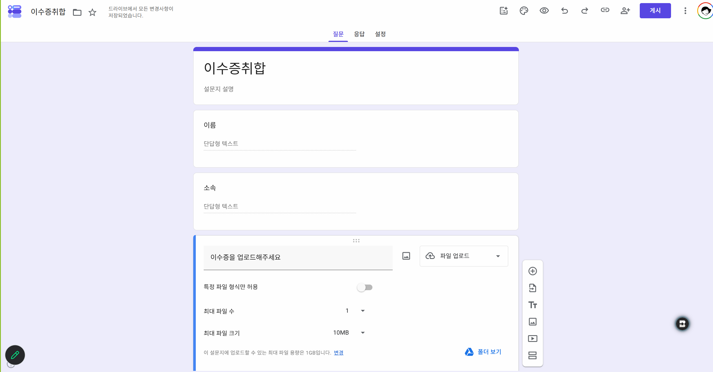
실습② 응답 받고 시트로 연결 (4분)
- 오른쪽 위 미리보기(눈 모양)로 학생 화면을 확인합니다.
- 보내기 → 링크를 복사해 옆자리 동료와 서로 가상 응답 2~3건을 넣어 줍니다.
- 응답 탭 → 시트에 연결(또는 Sheets에서 보기) → 새 스프레드시트 만들기.
이 시트 주소를 오후까지 보관해 주세요. 오후에는 직접 만든 화면에서 시트로 데이터가 쌓이게 합니다.
실습③ 시트를 말로 정리하기 (10분)
함수를 몰라도 됩니다. 열 이름(A, B, C…)을 짚어서 말하면 훨씬 정확합니다. 응답이 적으니 아래 가상 데이터로 연습합니다.
- sheet.new로 새 시트를 만들고, 아래 표를 복사해 A1 칸에 붙여넣기합니다.
- 시트 오른쪽 위 ✦ (Gemini) 버튼을 눌러 옆 패널을 엽니다.
- 아래 요청을 한 번에 하나씩 보냅니다.
응답일 이해도 어려운 개념 수업 속도 개선 제안 10/14 4 상관과 인과 적당 예시를 더 많이 10/14 2 회귀분석 빠름 속도를 조금 천천히 10/14 5 없음 적당 10/15 3 표본추출 빠름 실습 시간이 더 있으면 10/15 4 상관과 인과 적당 10/15 1 회귀분석 빠름 용어 정리 자료 부탁드립니다 10/16 3 회귀분석 적당 퀴즈가 도움이 됐어요 10/16 5 없음 느림 10/16 2 표본추출 빠름 중간에 질문 시간을 10/17 4 상관과 인과 적당 그래프 예시가 좋았습니다
CSV는 시트에서 파일 → 가져오기 → 업로드로 엽니다. 40건이면 그래프와 의견 묶기 결과가 더 뚜렷하게 나옵니다.
이해도 평균, 수업 속도별 응답 수, '어려운 개념'에서 가장 많이 나온 것을 요약해줘.
B열 이해도가 2 이하인 행을 연한 빨간색으로 표시해줘.
D열 수업 속도별 응답 수를 막대그래프로 만들어줘.
E열 개선 제안을 비슷한 내용끼리 묶어서 주제별로 정리하고, 다음 주 수업에서 바로 바꿀 수 있는 것 2가지를 제안해줘.
여기까지 하셨으면 충분합니다.
보너스집에서④ 매 학기 같은 정리를 버튼 한 번에 — 앱스크립트 맛보기
위에서 한 줄씩 시킨 정리를 코드 한 덩어리로 저장해 두고 ▶ 한 번으로 다시 돌리는 도구가 앱스크립트입니다. 코드는 제가 준비했고, 붙여넣고 실행만 하시면 됩니다.
- 성적_가상데이터.csv를 새 시트에 엽니다.
- 시트 메뉴 확장 프로그램 → Apps Script → 기존 코드를 지우고 성적정리_앱스크립트.gs 내용을 붙여넣고 저장합니다.
- ▶ 실행 → 권한 검토 → 내 계정 → 고급 → (프로젝트)로 이동 → 허용.
- 시트로 돌아오면 총점·학점(초안), 색 표시, 정렬, ‘요약’ 탭과 그래프가 한 번에 만들어집니다.
4 드라이브·캘린더·지메일 — 나누고, 예약받고, 정리하기 20분
파일을 안전하게 나누는 법, 면담을 학생이 직접 예약하게 하는 법, 쌓인 메일을 @Gmail로 한 번에 정리하는 법입니다.
필수① 처음 한 번 — 구글 앱 연결 켜기 (2분)
- gemini.google.com 입력창에 @를 입력합니다.
- 목록에 Gmail · Google Drive · Google Keep이 보이면 준비 완료입니다.
- 안 보이면 설정 → 앱(연결된 앱)에서 Google Workspace와 Google Keep을 켭니다.
실습② 드라이브 공유 — 보기·댓글·편집, 그리고 “사본 만들기” 링크 (8분)
학생에게 양식을 나눠 줄 때, 동료와 원고를 함께 쓸 때 가장 많이 막히고 사고도 가장 많이 나는 곳입니다.
- 양식을 내려받아 drive.google.com → 새로 만들기 → 파일 업로드로 올리고, 두 번 눌러 엽니다.
- 문서 위쪽 파일 → Google 문서로 저장을 누릅니다. (워드 파일 그대로는 공동 편집·사본 링크가 불편합니다)
- 오른쪽 위 공유 → 아래쪽 일반 액세스를 “제한됨” → “링크가 있는 모든 사용자”로 바꾸고, 오른쪽 역할을 고릅니다.
| 역할 | 받은 사람이 할 수 있는 것 | 이럴 때 |
|---|---|---|
| 뷰어 | 읽기만 | 강의 자료·공지 배포 |
| 댓글 작성자 | 읽고 댓글·제안만 | 학생 초안에 피드백 받기, 동료 검토 |
| 편집자 | 내용 수정·삭제까지 | 공동 저자, 팀 공동 작업 문서 |
학생 40명에게 “각자 한 부씩” 나눠 주는 법 — 사본 만들기 링크
편집자 링크를 단톡방에 올리면 40명이 한 문서를 동시에 고치게 됩니다. 대신 주소 끝을 바꾸면, 링크를 누른 학생마다 자기 드라이브에 사본이 생깁니다.
- 일반 액세스를 뷰어로 두고 링크를 복사합니다.
- 메모장에 붙여넣고, 맨 끝의 edit… 부분을 지우고 copy로 바꿉니다.
- 옆자리 교수님과 링크를 바꿔 열어 보세요. “문서 사본을 만드시겠습니까?”가 뜨면 성공입니다.
- 성적·학생 개인정보 파일은 “링크가 있는 모든 사용자”로 열지 않습니다. 필요한 사람의 이메일만 추가합니다.
- 누가 내용을 지웠다면 파일 → 버전 기록 → 버전 기록 보기에서 이전 상태로 되돌릴 수 있습니다.
- 공유를 끝낼 땐 일반 액세스를 다시 “제한됨”으로 바꿉니다.
여기까지 하셨으면 충분합니다.
실습③ 캘린더 예약 페이지 — 면담 신청을 학생이 직접 (6분)
“언제 시간 되세요?” 메일을 주고받는 대신, 가능한 시간을 열어 두면 학생이 빈 시간을 골라 직접 예약합니다. 예약되면 내 캘린더에 자동으로 들어갑니다.
- calendar.google.com → 왼쪽 위 ＋ 만들기 → 예약 일정을 고릅니다.
- 제목 “연구실 면담”, 예약 시간 20분, 가능한 시간 매주 화 14:00~16:00(반복)으로 정합니다.
- 예약 가능 기간(예: 학기 끝까지), 예약 사이 간격(예: 10분), 장소(예: 인문관 512호 또는 화상회의)를 정합니다.
- 예약 양식에서 질문을 추가합니다. 예: “학과·학번”, “상담하고 싶은 내용(한 줄)”.
- 저장 → 공유 → 예약 페이지 링크 복사. 새 탭에 붙여넣어 학생 화면을 확인합니다.
학생들에게 보낼 면담 예약 안내 공지를 5줄 이내로 써줘. 면담은 매주 화요일 14:00~16:00, 한 번에 20분이고, 아래 링크에서 직접 예약하면 된다는 내용이야. 정중하지만 짧게 써줘. 링크: [예약 페이지 링크 붙여넣기]
여기까지 하셨으면 충분합니다.
실습④ 지메일 — 쌓인 메일 정리와 답장 초안 (4분)
@Gmail 에서 지난 7일 동안 받은 메일 중 '마감', '제출', '회의'가 들어간 메일을 찾아서, 해야 할 일과 기한을 표로 정리해줘.
@Gmail 에서 가장 최근 [보낸 사람 이름] 님 메일을 찾아, 정중하게 일정을 다음 주로 미루자는 답장 초안을 써줘. 보내지는 말고 초안만 보여줘.
강사 시연집에서⑤ @드라이브 — 내 문서 불러와 초안 쓰기
- 위 파일 두 개를 내려받아 drive.google.com → 새로 만들기 → 파일 업로드로 내 드라이브에 올립니다.
- 제미나이 앱에서 아래 프롬프트를 보냅니다. (파일 이름 일부만 써도 찾아 줍니다)
@Google Drive 에서 '3주차 실습과제' 문서를 찾아서, 그 내용을 바탕으로 학생에게 보낼 과제 안내문 초안을 써줘. 제출 기한, 분량, 평가 기준은 문서에 있는 그대로 쓰고, 없으면 [확인 필요]로 남겨줘.
문서 안에서 바로: doc.new로 새 문서를 열고 ✦ 버튼(또는 “나를 위해 작성”)에서 “3주차 실습 안내문 초안을 써줘”라고 요청합니다. 문서 안 제미나이는 계정에 따라 없을 수 있습니다.
집에서⑥ @킵 — 떠오른 생각을 메모로, 메모를 일로
@Google Keep 에 '기말 준비' 체크리스트 메모를 만들어줘. 항목: 시험 문항 확정, 루브릭 공유, 성적 입력 기한 확인, 강의평가 안내 공지.
@Google Keep 에서 '아이디어'가 들어간 메모를 모두 찾아서, 연구 아이디어와 수업 아이디어로 나눠 정리해줘.
2단원의 프롬프트 카드를 킵에 저장해 두면, 휴대폰에서도 꺼내 쓸 수 있습니다.
5 손안의 제미나이 — 렌즈 · 음성 · QR 12분
휴대폰을 꺼내 주세요. 화면 속 글자, 눈앞의 물건, 소리 내어 하는 질문까지 제미나이가 받아 줍니다.
실습① 구글 렌즈 — 이미지 속 글자를 텍스트로 (5분)
PC 크롬에서: 이미지나 스캔 PDF 위에서 마우스 오른쪽 클릭 → Google 렌즈로 검색(또는 주소창의 렌즈 아이콘) → 글자를 드래그해 복사 또는 번역.
휴대폰에서: 구글 앱 또는 카메라의 렌즈 → 학회 슬라이드·게시판 공지·책 한 쪽을 찍고 텍스트 → 복사.
![[가상] 스캔된 옛 논문 표PNG](files/am/스캔논문_표_가상.png){kind=link}
![[가상] 영문 학회 포스터PNG](files/am/영문학회포스터_가상.png){kind=link}
PC에서는 이미지를 크롬에서 열어 오른쪽 클릭 → Google 렌즈로 검색. 휴대폰으로는 모니터 화면을 그대로 찍어도 됩니다. 표는 “시트에 붙여넣을 수 있게 표로”, 포스터는 “마감일만 한국어로”라고 이어서 물어보세요.
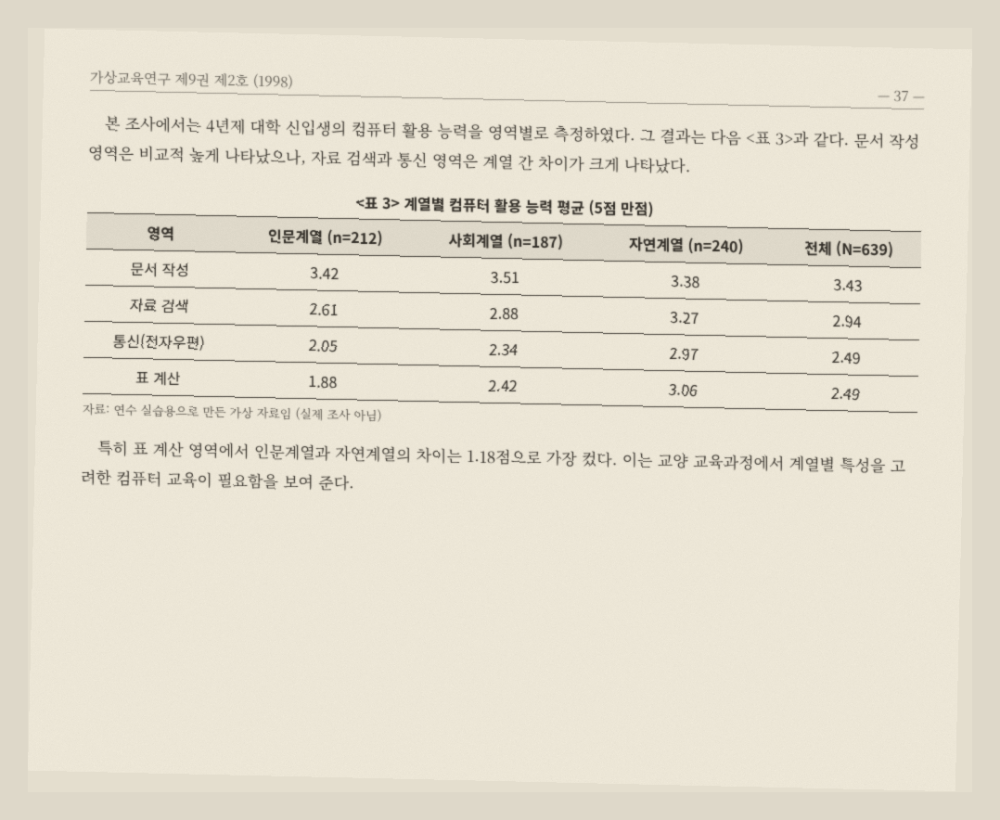
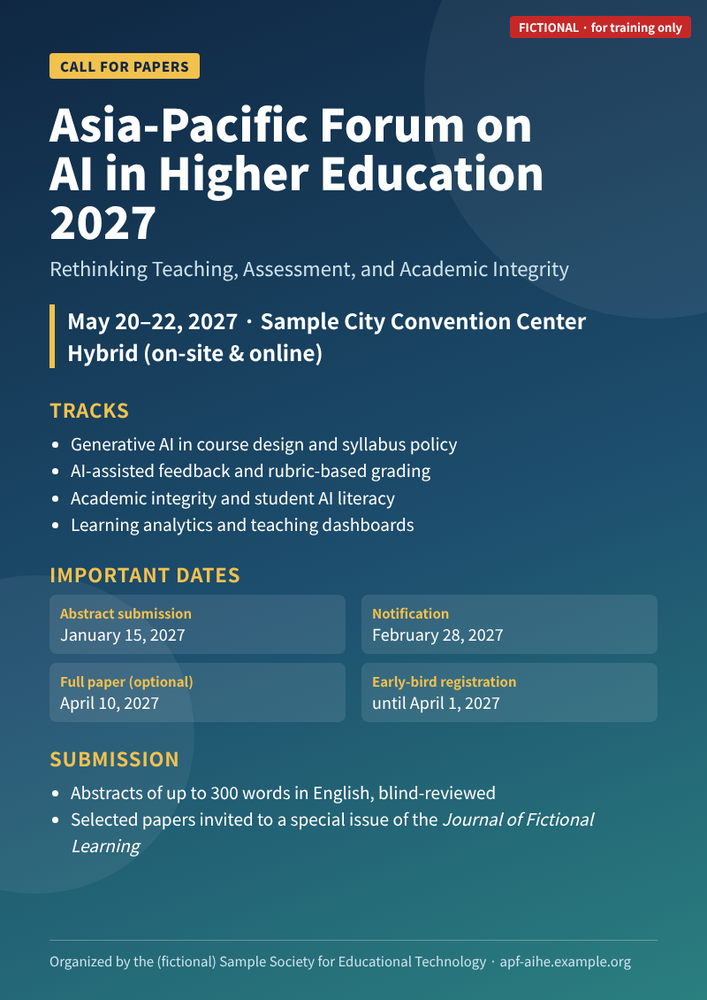
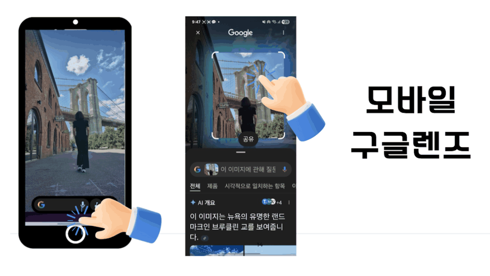
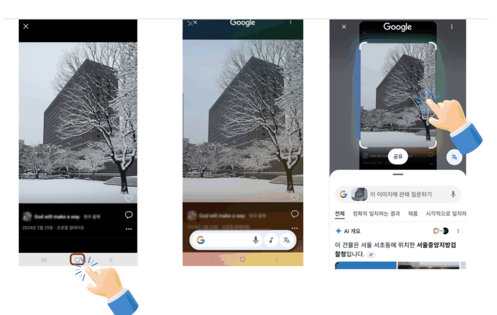
실습② 말로 입력하기 — 타자 대신 목소리로 (3분)
긴 지시문이나 초안은 말로 하는 편이 훨씬 빠릅니다. 받아 적은 글은 AI에게 다듬어 달라고 하면 됩니다.
| 어디서 | 어떻게 |
|---|---|
| 휴대폰 제미나이 앱 | 입력창의 🎤 마이크를 누르고 말한 뒤 보내기 |
| PC 제미나이 (gemini.google.com) | 입력창의 🎤 마이크 → 처음 한 번 마이크 허용 |
| 구글 문서 | 도구 → 음성 입력 (Ctrl+Shift+S) → 마이크를 눌러 말하기 · 크롬에서만 됩니다 |
아래는 내가 말로 받아 적은 글이야. 내용은 바꾸지 말고 맞춤법, 띄어쓰기, 문장부호만 고쳐줘. 고친 곳은 굵게 표시해줘. [받아 적은 글 붙여넣기]
실습③ QR 코드 — 링크를 바로 나눠 주기 (4분)
- 3단원에서 만든 폼의 응답 링크(또는 4단원의 면담 예약 페이지)를 크롬에서 엽니다.
- 페이지에서 마우스 오른쪽 클릭 → 이 페이지의 QR 코드 만들기(또는 주소창의 공유 아이콘 → QR 코드).
- 다운로드를 눌러 저장하고, 강의 슬라이드 첫 장에 넣습니다.
휴대폰 카메라로 화면의 QR을 비추면 폼이 바로 열리는지 확인해 보세요.
여기까지 하셨으면 충분합니다.
보너스집에서④ 제미나이 라이브 — 보여 주며 말로 묻기
- 휴대폰 제미나이 앱을 열고 입력창 옆 라이브 버튼(파형 모양)을 누릅니다.
- 말로 대화합니다. 말을 끊고 끼어들어도 됩니다.
- 카메라 버튼을 누르면 보이는 것을 함께 보며, 화면 공유를 누르면 휴대폰 화면을 보며 대화합니다.
| 해 볼 것 | 이렇게 말해 보세요 |
|---|---|
| 강의 리허설 | “지금부터 3분 동안 ‘상관과 인과’를 설명할게. 끝나면 학생 입장에서 헷갈렸을 부분 두 가지만 말해줘.” |
| 카메라로 묻기 | (책상 위 자료를 비추며) “이 표에서 눈에 띄는 경향을 설명해줘.” |
| 외국어 연습 | “다음 주 국제학회 질의응답을 연습하고 싶어. 영어로 질문 하나씩 해줘.” |
6 크롬 확장 프로그램 · 마무리 10분
크롬에 작은 기능을 더하는 것이 확장 프로그램입니다. 많이 설치하기보다 믿을 수 있는 것 몇 개만 고르는 것이 요령입니다.
실습① 한글(HWP·HWPX) 파일을 크롬에서 바로 보기 (4분)
- chrome.google.com/webstore에서 “[확인 필요: 강사 추천 HWP 뷰어 확장 이름]”을 검색해 Chrome에 추가합니다.
- 메일이나 웹에 올라온 한글 파일을 내려받지 않고 크롬에서 엽니다.
- 열린 문서에 1단원의 제미나이 패널을 그대로 써서 요약·대조합니다. (공문 두 개 비교에 특히 좋습니다)
필수② 업무에 유용한 확장·내장 기능 (3분)
| 이름 | 무엇을 | 종류 |
|---|---|---|
| Google 번역 | 외국어 페이지 일부만 골라 번역 | 구글 공식 확장 |
| Google 문서 오프라인 | 인터넷이 끊겨도 문서·시트 편집 | 구글 공식 확장 |
| 읽기 모드 | 광고·메뉴 없이 본문만 크게, 소리 내어 읽기 | 크롬 내장 (⋮ → 더보기 도구) |
| 탭 그룹 | “강의 · 논문 · 학사”처럼 탭을 색깔별로 묶기 | 크롬 내장 (탭 오른쪽 클릭) |
| [확인 필요: 강사 추천 확장] | [확인 필요] | [확인 필요] |
필수③ 마무리 — 내일 할 한 가지 + 로그아웃 (3분)
오늘 해 본 것 중 내일 연구실에서 한 번 더 해 볼 것 하나만 골라 킵에 적어 두세요.
- 크롬 프로필 아이콘 → 프로필 관리 → 내 프로필의 ⋮ → 삭제
- 깜빡했다면: 휴대폰에서 구글 계정 관리 → 보안 → 내 기기 → 해당 PC 로그아웃
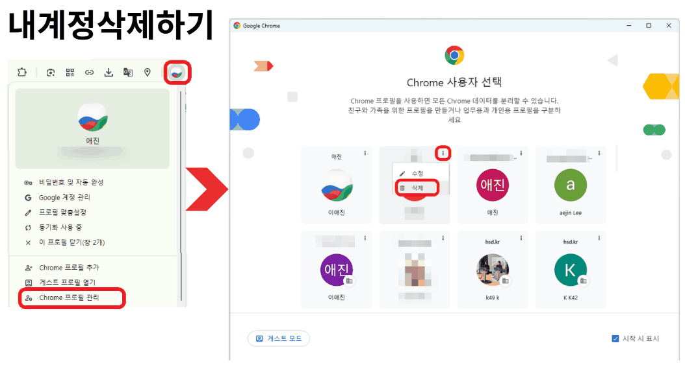
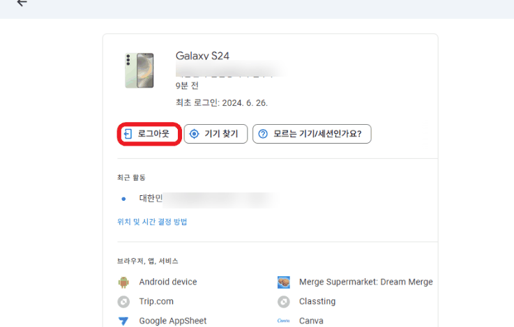
참고 링크
화면과 메뉴 이름은 자주 바뀝니다. 실제 화면을 우선하세요.